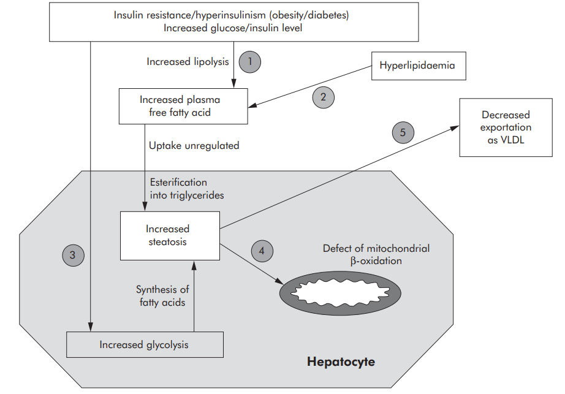
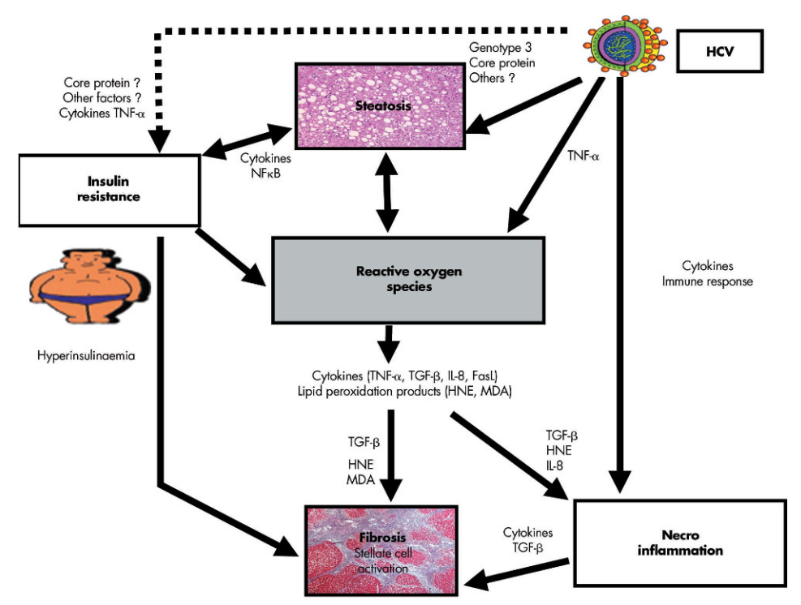

SINH LÝ BỆNH & CƠ CHẾ BỆNH SINH VIÊM GAN SIÊU VI C
Hepatitis C Virus (HCV) Pathophysiology & Pathogenesis — Phân tích phân tử cấu trúc polyprotein, chu kỳ sống hạt Lipo-viro-particle, cơ chế mỡ hóa gan (Viral Steatosis), đề kháng insulin qua IRS-1/2, chuỗi phản ứng oxy hóa lipid sinh xơ hóa gan qua MDA/4-HNE/TGF-β, cạn kiệt tế bào T và vết sẹo phân tử (Epigenetic Scar) sau điều trị DAA.
Viêm gan siêu vi C (Hepatitis C Virus - HCV) là nguyên nhân hàng đầu gây xơ gan mất bù, suy gan và ghép gan trên toàn thế giới. Với đặc tính bộ gen RNA đơn bản dương biến dị cực nhanh tạo các chủng giả (quasispecies), HCV có tỷ lệ chuyển thành nhiễm trùng mạn tính lên tới 70 - 85%. Khác với HBV, tổn thương gan trong nhiễm HCV là sự kết hợp độc đáo giữa rối loạn chuyển hóa lipid/glucose (mỡ hóa gan & đề kháng insulin) và stress oxy hóa kích hoạt xơ hóa nhu mô gan.
Phần I: Đặc Điểm Vi Rút Học & Bản Đồ Polyprotein HCV (Genomics & Viral Proteins)
Vi rút viêm gan C (HCV) là vi rút có màng bọc lipid thuộc họ Flaviviridae, chi Hepacivirus. Bộ gen của HCV là một phân tử RNA sợi đơn bản dương (positive-sense ssRNA) dài khoảng 9.6 kb. Ở đầu 5' có cấu trúc IRES (Internal Ribosome Entry Site) cho phép dịch mã độc lập với cấu trúc mũ m7G của tế bào chủ.
1. Sáu Kiểu Gen Chính & Hiện Tượng "Chủng Giả" (Quasispecies)
- Phân bố kiểu gen: HCV được chia làm 6 kiểu gen chính (Genotypes 1 đến 6) và hàng chục phân nhóm (subtypes a, b, c...). Tại Việt Nam, kiểu gen 1 (chủ yếu 1b) và kiểu gen 6 chiếm đa số trường hợp lâm sàng.
- Hiện tượng Chủng giả (Quasispecies Dynamics): Enzyme sao chép NS5B RNA-dependent RNA polymerase của HCV hoàn toàn thiếu hoạt tính sửa sai (lack of proofreading activity), dẫn đến tỷ lệ đột biến cực cao (khoảng 10-4 đến 10-5 lỗi/nucleotide/chu kỳ sao chép). Mỗi ngày trong cơ thể bệnh nhân sản sinh hàng tỷ biến thể di truyền hơi khác nhau. Điều này giúp HCV liên tục biến đổi epitop kháng nguyên, dễ dàng né tránh hệ miễn dịch và giải thích tại sao chưa thể phát triển thành công vaccine phòng ngừa HCV.
2. Cấu Trúc Polyprotein & Các Đích Tác Dụng Thuốc Kháng Virus Trực Tiếp (DAAs)
Toàn bộ bộ gen HCV được dịch mã thành một chuỗi tiền chất Polyprotein duy nhất dài khoảng 3.000 axit amin, sau đó được cắt bởi protease tế bào chủ và protease của vi rút thành 10 protein riêng biệt:
Core (Protein lõi Capsid): Tự lắp ráp bao bọc bộ gen RNA; định vị trên bề mặt giọt mỡ và màng ty thể, trực tiếp gây mỡ hóa gan và sản sinh gốc oxy hóa (ROS).
E1 & E2 (Glycoprotein vỏ màng): Tương tác với các thụ thể bề mặt tế bào gan (CD81, SR-BI) để xâm nhập tế bào; vùng siêu biến HVR1 trên E2 là đích tấn công chính của kháng thể trung hòa.
p7 (Kênh ion viroporin): Cần thiết cho quá trình lắp ráp và bài tiết virion.
NS3/4A (Serine Protease / Helicase): Cắt polyprotein và cắt phân tử tiếp hợp TRIF/MAVS để vô hiệu hóa đáp ứng interferon tự nhiên của tế bào chủ. Đích DAA: -previr (Glecaprevir, Voxilaprevir)
NS4B & NS5A: Tái cấu trúc màng lưới nội chất tạo "Membranous Web" và điều hòa lắp ráp hạt virion quanh giọt mỡ. Đích DAA: -asvir (Velpatasvir, Pibrentasvir)
NS5B (RdRp Polymerase): Enzyme sao chép bộ gen RNA của vi rút. Đích DAA: -buvir (Sofosbuvir)
Phần II: Chu Kỳ Nhân Lên của HCV & Hạt Lipo-Viro-Particle (LVP)
1. Dòng Thác Xâm Nhập Phức Hợp Vào Tế Bào Gan
Quá trình xâm nhập của HCV là một vũ điệu phân tử đa bước tinh vi có sự tham gia của nhiều thụ thể bề mặt:
2. Mạng Lưới Sao Chép (Membranous Web) & Khái Niệm Hạt Lipo-Viro-Particle (LVP)
- Mạng lưới túi màng (Membranous Web): Protein NS4B và NS5A kích hoạt sự biến đổi cấu trúc màng lưới nội chất (ER) thành một hệ thống túi màng kín. Sự cách ly này bảo vệ phức hợp sao chép RNA mạch kép trung gian không bị các thụ thể nhận diện mẫu nội bào (như RIG-I, MDA5) phát hiện.
- Lắp ráp liên kết giọt mỡ (Lipid Droplets Assembly): HCV sử dụng giọt mỡ (lipid droplets) trong bào tương làm "bệ phóng lắp ráp". Protein Core tập trung quanh giọt mỡ, thu hút RNA thế hệ mới từ NS5A sang để đóng gói nucleocapsid.
- Hạt Lipo-Viro-Particle (LVP): Virion HCV sau khi bọc vỏ màng sẽ kết hợp chặt chẽ với các apolipoprotein của ký chủ (ApoE, ApoB, ApoC) tạo thành một hạt lai phức hợp lipid - virus gọi là Lipo-Viro-Particle (LVP). Nhờ có "lớp áo ngụy trang" lipoprotein tỷ trọng cực thấp này, HCV không bị kháng thể trung hòa nhận diện và có thể dễ dàng sử dụng các thụ thể lipoprotein của tế bào gan (như LDLR, SR-BI) để tiếp tục lây nhiễm tế bào mới.
Phần III: Cơ Chế Bệnh Sinh Mỡ Hóa Gan (Viral Steatosis) & Đề Kháng Insulin
Tình trạng mỡ hóa gan (Steatosis) xuất hiện ở trên 55% bệnh nhân viêm gan C mạn tính (cao gấp 2 - 3 lần so với viêm gan B hoặc cộng đồng thông thường).
Gặp phổ biến ở các Kiểu gen 1, 2, 4, 5, 6. Mức độ mỡ hóa tương quan chặt chẽ với chỉ số khối cơ thể (BMI), tình trạng béo phì trung tâm và hội chứng chuyển hóa của bệnh nhân. Tình trạng mỡ hóa không biến mất hoàn toàn ngay sau khi sạch virus.
Đặc trưng kinh điển ở HCV Kiểu gen 3 (Genotype 3a). Protein Core kiểu gen 3 có hoạt tính tích lũy triglyceride mạnh gấp nhiều lần các kiểu gen khác. Mức độ mỡ hóa tương quan thuận trực tiếp với nồng độ HCV-RNA và biến mất hoàn toàn sau khi đạt SVR bằng thuốc DAA.
3. Năm Con Đường Sinh Bệnh Học Tích Lũy Mỡ Trong Tế Bào Gan
Sự tích lũy triglyceride xảy ra khi lượng acid béo nạp vào và tổng hợp nội tại vượt quá khả năng tiêu thụ qua beta-oxy hóa tại ty thể hoặc khả năng xuất khẩu dưới dạng VLDL:
- 1 Tăng hấp thu acid béo tự do (FFA Input): Tình trạng đề kháng insulin ngoại vi kích hoạt enzyme hormone-sensitive lipase tại mô mỡ, giải phóng ồ ạt acid béo tự do vào tuần hoàn cửa đổ về gan.
- 2 Tăng đường phân & Tổng hợp lipid mới (De novo lipogenesis): Trạng thái tăng đường huyết và tăng insulin máu kích hoạt con đường SREBP-1c và ChREBP, thúc đẩy tế bào gan tổng hợp acid béo mới.
- 3 Ức chế xuất khẩu VLDL (Impaired VLDL Secretion): Protein Core của HCV ức chế trực tiếp enzyme MTP (Microsomal Triglyceride Transfer Protein) — enzyme then chốt đóng gói triglyceride với Apolipoprotein B, khiến lipid bị ứ đọng hoàn toàn bên trong bào tương tế bào gan.
- 4 Suy giảm beta-oxy hóa tại ty thể (Impaired Mitochondrial β-Oxidation): Protein Core bám vào màng ty thể, phá vỡ chuỗi hô hấp tế bào, gây giảm oxy hóa acid béo và sản sinh ồ ạt các gốc tự do ROS.
- 5 Tác động trực tiếp lên giọt mỡ: Protein Core và NS5A tuyển mộ và ổn định các phân tử mỡ quanh bộ máy sao chép của virus.

4. Cơ Chế Gây Đề Kháng Insulin Của HCV (Insulin Resistance Mechanism)
Nhiễm HCV gây ra tình trạng đề kháng insulin đặc thù ngay cả ở bệnh nhân không béo phì:
Phản ứng viêm do HCV kích thích giải phóng nồng độ cao cytokine tiền viêm TNF-α và kích hoạt protein SOCS-3 (Suppressor of Cytokine Signaling 3). Các phân tử này ức chế quá trình phosphoryl hóa tyrosine và thúc đẩy quá trình thoái hóa ubiquitin đối với IRS-1 và IRS-2. Hậu quả là con đường tín hiệu xuôi dòng PI3K / Akt / GLUT4 bị chặn đứng hoàn toàn, khiến tế bào gan mất khả năng thu nạp glucose, dẫn đến tăng đường huyết, tăng insulin máu bù trừ và đái tháo đường típ 2 thứ phát.
Phần IV: Cơ Chế Xơ Hóa Gan (Fibrogenesis) & Viêm Hoại Tử Tiến Triển
Sự hiện diện của mỡ gan đơn thuần không gây xơ hóa, nhưng stress oxy hóa và phản ứng viêm hoại tử là cầu nối then chốt thúc đẩy nhu mô gan tiến triển nhanh chóng đến xơ gan:
1. Quá Trình Oxy Hóa Lipid (Lipid Peroxidation) & Độc Tính Của MDA / 4-HNE
Lượng gốc oxy hóa hoạt động (ROS) khổng lồ sinh ra từ ty thể bị tổn thương sẽ tấn công các acid béo chưa bão hòa trên màng tế bào gan, gây ra phản ứng dây chuyền Lipid Peroxidation giải phóng các aldehyde độc tính cao:
- Malondialdehyde (MDA) & 4-Hydroxynonenal (4-HNE): Là các sản phẩm oxy hóa lipid bền vững, khuếch tán ra khỏi tế bào gan bị tổn thương.
- Hóa hướng động viêm: 4-HNE cùng với Interleukin-8 (IL-8) là những chất hóa hướng động bạch cầu cực mạnh, thu hút bạch cầu đa nhân trung tính thâm nhiễm vào tiểu thùy gan gây viêm hoại tử (necroinflammation).
2. Dòng Thác Kích Hoạt Tế Bào Hình Sao (Hepatic Stellate Cells - HSCs)
Xơ hóa gan trong viêm gan C là kết quả của sự kích hoạt đa yếu tố lên các tế bào hình sao gan (HSCs) trong khoang Disse:
TGF-β (Transforming Growth Factor-beta): Được tiết ra từ tế bào Kupffer và tế bào gan tổn thương, là yếu tố profibrogenic mạnh nhất, thúc đẩy HSCs chuyển dạng thành Myofibroblasts sản xuất ồ ạt Collagen type I và III.
MDA & 4-HNE: Tác động trực tiếp lên màng HSCs làm tăng biểu hiện các gen tổng hợp chất nền ngoại bào (ECM).
Tế bào hình sao gan có biểu hiện thụ thể insulin chức năng trên màng tế bào. Tình trạng tăng insulin máu do đề kháng insulin kích thích trực tiếp HSCs tăng sản xuất CTGF (Connective Tissue Growth Factor), làm tăng gấp bội tốc độ tích tụ mô xơ và xơ hóa gan.

Phần V: Miễn Dịch Bệnh Học & "Vết Sẹo Phân Tử" Sau Điều Trị DAA
Giống như HBV, virus viêm gan C là vi rút không trực tiếp gây độc tế bào (non-cytopathic); tổn thương nhu mô gan là hệ quả của phản ứng miễn dịch tế bào CD8+ T.
1. Ngã Rẽ Miễn Dịch Giữa Nhiễm Trùng Cấp Tự Giới Hạn vs Mạn Tính
| Đặc điểm Miễn dịch | Nhiễm HCV Cấp Tự Khỏi (20 - 30% bệnh nhân) | Chuyển Thành Nhiễm HCV Mạn Tính (70 - 80% bệnh nhân) |
|---|---|---|
| Tế bào T CD4+ / CD8+ | Đáp ứng miễn dịch tế bào mạnh mẽ, bền bỉ và nhận diện đa mục tiêu (broad-based) trên nhiều protein vi rút. | Tế bào T đặc hiệu đơn mục tiêu, yếu ớt và nhanh chóng bị ức chế hoặc đào thải do đột biến thoát miễn dịch (escape mutations). |
| Cytokine kháng virus | Sản xuất nồng độ cao IFN-γ và TNF-α giúp thanh thải tế bào gan nhiễm vi rút. | Giảm sản xuất IFN-γ; protein NS3/4A cắt bất hoạt các phân tử MAVS và TRIF, làm tê liệt hệ thống interferon nội tại của tế bào gan. |
| Trạng thái tế bào T | Hình thành tế bào T nhớ bảo vệ (Memory T cells). | Rơi vào trạng thái suy kiệt miễn dịch (T-cell exhaustion) do kháng nguyên kích thích liên tục; biểu hiện thụ thể ức chế PD-1, CTLA-4, TIM-3, LAG-3. |
2. Khái Niệm "Vết Sẹo Phân Tử / Biểu Sinh" (Epigenetic Scar of Exhaustion)
Mặc dù các thuốc kháng vi rút trực tiếp (DAAs: Sofosbuvir, Velpatasvir, Glecaprevir) có thể quét sạch 100% HCV-RNA khỏi cơ thể (đạt đáp ứng virus bền vững SVR12), các nghiên cứu giải trình tự epigenetics hiện đại cho thấy:
- Vết sẹo biểu sinh trên tế bào gan (Hepatic Epigenetic Scar): Quá trình nhiễm HCV mạn tính đã làm biến đổi vĩnh viễn các dấu ấn methyl hóa DNA và acetyl hóa histone trên bộ gen tế bào gan (tăng biểu hiện các gen sinh ung thư và ức chế các gen sửa chữa DNA). Dấu ấn này không biến mất sau khi khỏi virus, duy trì nguy cơ tiến triển thành ung thư tế bào gan (HCC).
- Vết sẹo suy kiệt trên tế bào T (T-Cell Exhaustion Scar): Các tế bào T CD8+ đặc hiệu vi rút vẫn duy trì cấu trúc chromatin "khóa kín", không thể phục hồi hoàn toàn khả năng miễn dịch nhớ để phòng chống tái nhiễm.
Phần VI: Đối Sánh Toàn Diện Sinh Lý Bệnh HBV vs HCV & Clinical Pearls
1. Bảng Đối Sánh Sinh Lý Bệnh Giữa Viêm Gan Siêu Vi B (HBV) và Viêm Gan Siêu Vi C (HCV)
| Đặc tính Sinh lý bệnh | Viêm Gan Siêu Vi B (HBV) | Viêm Gan Siêu Vi C (HCV) |
|---|---|---|
| Bản chất Bộ gen | DNA bán kép (rcDNA 3.2 kb); nhân lên qua khuôn phiên mã ngược. | RNA đơn bản dương ((+)ssRNA 9.6 kb); nhân lên hoàn toàn trong bào tương. |
| Tích hợp vào Bộ gen Người | Có (dsLDNA chèn vào DNA tế bào gan gây đột biến chèn). | Hoàn toàn Không (HCV không có giai đoạn DNA). |
| Hồ chứa Bền vững trong Nhân | cccDNA minichromosome siêu bền vững trong nhân tế bào gan. | Không có (Chỉ tồn tại các phân tử RNA tạm thời trong bào tương). |
| Tỷ lệ Chuyển Mạn Tính (Người lớn) | Thấp (5 - 10% ở người trưởng thành có miễn dịch bình thường). | Rất cao (70 - 85% do hiện tượng đột biến chủng giả quasispecies). |
| Mỡ hóa Gan (Steatosis) | Không phổ biến, chỉ xuất hiện do yếu tố chuyển hóa đi kèm. | Rất phổ biến (> 55%); trực tiếp do protein Core & NS5A gây ra (nhất là Kiểu gen 3). |
| Cơ chế Sinh Ung Thư Gan (HCC) | Trực tiếp qua Oncoprotein HBx & Tích hợp DNA (có thể sinh ung trên nền gan chưa xơ hóa). | Gián tiếp qua Viêm mạn tính → Xơ gan (hiếm khi sinh ung nếu gan chưa xơ hóa ≥ F3/F4). |
| Khả năng Điều Trị Khỏi Hoàn Toàn | Chỉ đạt "Chữa khỏi chức năng" (Functional Cure); khó tiệt căn cccDNA. | Chữa khỏi tiệt căn hoàn toàn (Virological Cure / SVR12 > 98%) bằng phác đồ thuốc DAA 8 - 12 tuần. |
- Thời gian điều trị DAA ngắn ngày nhờ không có cccDNA: Do chu kỳ sống của HCV diễn ra hoàn toàn trong bào tương và không có hồ chứa cccDNA trong nhân như HBV, các phác đồ DAA hiện đại (Sofosbuvir/Velpatasvir hoặc Glecaprevir/Pibrentasvir) chỉ cần điều trị trong 8 - 12 tuần là có thể quét sạch hoàn toàn vi rút ra khỏi cơ thể với tỷ lệ khỏi bệnh > 98%.
- Chữa khỏi virus (SVR) ≠ Miễn dịch bảo vệ trọn đời: Do kháng thể anti-HCV không phải là kháng thể trung hòa bảo vệ bền vững và tế bào T mang "vết sẹo phân tử", bệnh nhân đã điều trị khỏi HCV hoàn toàn vẫn có thể bị tái nhiễm HCV nếu tiếp tục có hành vi nguy cơ (tiêm chích ma túy, quan hệ tình dục không an toàn).
- Bắt buộc tiếp tục tầm soát HCC ở bệnh nhân xơ hóa F3 - F4 sau khi đạt SVR: Bệnh nhân đã có xơ hóa tiến triển (F3) hoặc xơ gan (F4) trước khi điều trị DAA vẫn mang "vết sẹo biểu sinh" và cấu trúc tiểu thùy gan đã biến đổi, do đó bắt buộc phải duy trì siêu âm gan và AFP định kỳ mỗi 6 tháng suốt đời để phát hiện sớm ung thư gan.
📚 Tài liệu Tham khảo Chính (AMA Format)
- 1. Asselah T, Rubbia-Brandt L, Marcellin P, Negro F. Steatosis in chronic hepatitis C: why does it really matter? Gut. 2006;55(1):123-130. doi:10.1136/gut.2005.069757.
- 2. Bộ Y tế Việt Nam. Hướng dẫn chẩn đoán và điều trị bệnh viêm gan vi rút C (Ban hành kèm theo Quyết định số 2855/QĐ-BYT ngày 25/09/2024 của Bộ trưởng Bộ Y tế). Hà Nội: Bộ Y tế; 2024.
- 3. Krishnan T, Puri MS. Systematic review of hepatitis C virus (HCV). Paripex Indian J Res. 2026;15(5):31-33. doi:10.36106/paripex.
- 4. European Association for the Study of the Liver (EASL). EASL recommendations on treatment of hepatitis C: Final update of the series. J Hepatol. 2020;73(5):1170-1218.
- 5. Urban S, Neumann-Haefelin C, Lampertico P. Hepatitis delta virus: insights into a peculiar pathogen and novel treatment options. Gut. 2021;70(9):1782-1794. doi:10.1136/gutjnl-2020-323888.